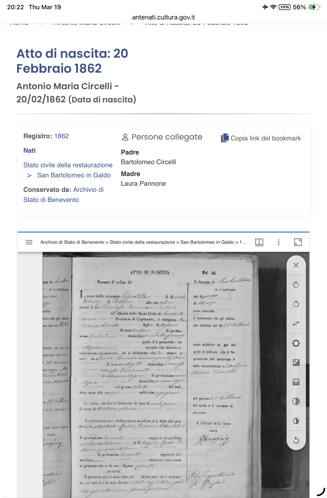

Records, Sources & Next Steps
Documents In Hand
Leonardantonio & Maria Donata Marriage Record (1884)
Status: IN HAND — Atti di Matrimonio, Comune di San Bartolomeo in Galdo. Confirms: marriage January 27, 1884. Groom: Leonardantonio Belfiore (age 23, foundling — padre ignoto, madre ignota). Bride: Maria Donata Circelli (age 27, parents Giuseppe Circelli and Marianna Mita, both deceased). Both illiterate. This is the single most transformative document in the research.
Michael Kirtus Belfiore Death Certificate
Status: IN HAND — New York State, Dist. No. 5904, January 16, 1952. Born December 15, 1885, Italy. Father: Anthony Belfiore. Mother: Maria Circelli. Occupation: Painter. Residence: 46 Mechanic Street, New Rochelle (58 years). SSN: 078-10-9940. Cause of death: Arteriosclerotic heart disease. Buried: Holy Sepulchre Cemetery, January 19, 1952. Informant: Frances M. Belfiore.
Michael Kirtus Belfiore — WWI Draft Registration (1918)
Status: IN HAND — Registration Card A1722, Serial 2303. Michael Kirtus Belfiore, age 32, born December 15, 1885. Address: 114 Murray Avenue, New Rochelle. Occupation: Painter. Employer: Witmark, 8 Dante Street. Nearest relative: "(Child) Dorothy Belfiore" at 216 Hamilton Street, Bridgeport, CT. Citizenship: via "Father's Papers." Registered September 12, 1918.
Michael Belfiore — WWII Draft Registration (1942)
Status: IN HAND — D.S.S. Form 1. Michael Belfiore, age 59, born December 15, 1883. Address: 48 Coligni Avenue, New Rochelle. Employer: Alfred A. Last, 141 Chauncey Avenue. Note: birth year reads 1883 on this card vs. 1885 on the 1918 card.
Sammy Belfore Obituary
Status: IN HAND — The Standard-Star, New Rochelle. Born Christmas Day 1899. Parents: "the late Anthony and Maria Cicelli Belfiore." Four brothers: Michael, Frank, Joseph, Sammy. Five sisters: Rose, Caroline, Mollie (Mrs. Anthony Drew), Phyl (Mrs. Angelo Paternostro), Mary (Mrs. Joseph D'Onofrio). Golf pro at Seabreeze Golf and Tennis Club, Daytona Beach, from 1948.
Maria Doreta Circelli — Ellis Island Record
Status: CONFIRMED — Ellis Island Foundation passenger database. "Circelli, Maria Doreta," arrived December 2, 1896, ship Oregon, from Genoa and Naples. Passenger ID 102895011196, Frame 62, Line 413.
1940 U.S. Census — Michael Belfiore Household
Status: IN HAND — New Rochelle, Westchester County, NY. Shows Michael (head), Frances (wife), Edward (son), and Joseph (son). Michael listed as "Painter, Building." Confirms household composition.
Golfdom Magazine Article (February 1948)
Status: IN HAND (PDF) — Article by Sammy Belfore in Golfdom, the leading golf trade magazine. Describes his new position at Seabreeze Golf and Tennis Club, Daytona Beach. Details the $4,600 reseeding effort, Toro equipment, 5-year wartime shutdown, and membership structure. Includes photographs of the Seabreeze clubhouse and Sammy & Frank together in the pro shop. View PDF
Golfdom "Making the Swing" Column (January 1948)
Status: IN HAND (PDF) — Herb Graffis's gossip column in Golfdom magazine announcing Sammy Belfore's appointment as the new pro at Seabreeze. View PDF
Clinton Russell Biography (David Ouse)
Status: IN HAND (PDF) — Full biography of Clinton Russell, the blind golfer coached by Sammy Belfore. Covers Russell's family (father Newell F. Russell, co-founder of Bridgeman-Russell dairy), caddy Jimmy Koehler, the 1938 Wykagyl match against Charley Oxenham, Time magazine coverage, the 1948 Rackham GC rematch, Charles Boswell rivalry, and the 1957 Ben Hogan Award. View PDF
Patricia Hupp Fleming — Cedar Hill Cemetery
Status: CONFIRMED — Find a Grave memorial for Patricia Hupp Fleming (June 11, 1933 – January 1, 2022). Buried at Cedar Hill Cemetery, Birmingham, Michigan. Confirms her birth/death dates, middle name "Hupp," and Birmingham residence. Daughter of Sammy Belfore Sr. and Virginia Hupp.
PGA of America Player Profile — Sammy Belfore
Status: CONFIRMED — PGA of America database entry for Sammy Belfore, listing one official PGA Tour win. Confirms his professional status and competitive record at the highest level of American golf.
Document Gallery

Atti di Matrimonio (Marriage Record) — Leonardantonio Belfiore and Maria Donata Circelli, January 27, 1884, San Bartolomeo in Galdo. The document that revealed the patriarch was a foundling.

Atto di Nascita (Birth Record) — Antonio Maria Circelli, born February 20, 1862, in San Bartolomeo in Galdo. Parents: Bartolomeo Circelli and Laura Pannone. A different Circelli branch from Maria Donata's line.

Michael Kirtus Belfiore's WWI Draft Registration Card, September 12, 1918. Shows his middle name "Kirtus," his address at 114 Murray Avenue, and his daughter "(Child) Dorothy Belfiore" at 216 Hamilton Street, Bridgeport, CT.

Michael Belfiore's WWII Draft Registration Card, 1942. Shows birth date as December 15, 1883 (two years earlier than the 1918 card), address at 48 Coligni Avenue, and employer Alfred A. Last.

1940 U.S. Census, New Rochelle, Westchester County, NY — Line 29: Belfiore, Michael (head, age 55, painter). Shows Frances (wife), Edward (son), and Joseph (son) in the household.
Documents Ordered (Pending Receipt)
Frances T. Belfiore Death Certificate
Status: ORDERED — NY State Dept of Health. DOD: April 5, 1967. City: New Rochelle. DOB: September 17, 1897. Why it matters: Will reveal her parents' names and birthplaces (Ireland vs. US), potentially opening a second ancestral line back to County Mayo/Roscommon.
"Anthony Belfiore" Death Certificate
Status: IDENTIFIED, NOT YET ORDERED — NY State Dept of Health. DOD: July 11, 1938. Certificate #42184. City: New Rochelle. Why it matters: Now that the marriage record reveals the patriarch's name was Leonardantonio (not Anthony), this death certificate may list him under any variant — "Leonardantonio," "Leonard Antonio," or simply "Anthony." It would reveal age at death, cause, burial location, and the informant. Important caveat: If Leonardantonio died in Italy before 1896, then this 1938 Anthony Belfiore may be a different family member entirely. The 1900 census is the key to resolving this.
All Known Vital Records
| Person | Event | Date | Location | Status |
|---|---|---|---|---|
| Leonardantonio & Maria Donata | Marriage | Jan 27, 1884 | San Bartolomeo in Galdo | In Hand |
| Michael Kirtus Belfiore | Death | Jan 16, 1952 | New Rochelle Hospital | In Hand |
| Michael Kirtus Belfiore | WWI Draft Card | Sep 12, 1918 | New Rochelle, NY | In Hand |
| Michael Belfiore | WWII Draft Card | 1942 | New Rochelle, NY | In Hand |
| "Anthony Belfiore" | Death | Jul 11, 1938 | New Rochelle, NY | Cert #42184 — May be Leonardantonio |
| Frances T. Belfiore | Death | Apr 5, 1967 | New Rochelle, NY | Ordered |
| Maria Doreta Circelli | Death | Unknown | Unknown | Not Found |
| Frank Belfiore | Death | Apr 21, 1968 | Daytona Beach, FL | Confirmed |
| Sammy Belfore | Death | ~1971/1972 | Daytona Beach, FL | Confirmed via Obituary |
| Joseph Belfiore (grandfather) | Death | ~Apr 1986 | West Babylon, NY | SSDI Confirmed |
| Maria Doreta Circelli | Immigration | Dec 2, 1896 | Ellis Island, NY (SS Oregon) | Confirmed |
| Michael Belfiore | Burial | Jan 19, 1952 | Holy Sepulchre Cemetery | Confirmed |
| Patricia Hupp Fleming | Death | Jan 1, 2022 | Birmingham, MI | Confirmed (Find a Grave) |
| Samuel A. Belfore Jr. | Death | ~2024/2025 | Ormond Beach, FL | Reported |
| Sammy Belfore Sr. | PGA Tour Win | ~1930s | Unknown venue | PGA Profile Confirmed |
Census Records to Search
Federal and state census records are the fastest way to fill gaps in the family timeline. The most important is the 1900 U.S. Federal Census, which asked every immigrant their year of immigration. Finding the Anthony Belfiore household in New Rochelle on this census would reveal the exact arrival years for Anthony, Maria, and Michael, plus all children and their ages at the time.
1900 U.S. Federal Census (HIGHEST PRIORITY)
The most important single action remaining. Search for any Belfiore household in New Rochelle, Westchester County, NY. Would show whether Leonardantonio was present, year of immigration for every household member, all children with ages, and exact birth years. If Leonardantonio appears, the entire immigration narrative changes. If only Maria and Michael appear, it confirms the widow hypothesis. Available on Ancestry.com and FamilySearch.org.
1905 & 1915 NY State Census
Mid-decade snapshots of the household as it grew. Would show children born between federal censuses.
1910 U.S. Federal Census
Would show citizenship status (alien / first papers / naturalized) for Anthony and Maria. Crucial for Italian citizenship research.
1920 U.S. Federal Census
Would show year of naturalization. The family would have been in New Rochelle for over 25 years by this point.
1930 U.S. Federal Census
Full household with all children's ages — would resolve any remaining birth order questions.
1940 U.S. Federal Census
Already partially searched. Lena Belfiore confirmed in New Rochelle Ward 1, parents Antonio Belfiore and Maria D. Circelli. Free on Ancestry.com.
Italian Citizenship — Current Legal Landscape
Law 74/2025 (the "Tajani Decree") was enacted May 24, 2025 and upheld by the Constitutional Court on March 12, 2026. It limits jure sanguinis Italian citizenship to parent or grandparent born in Italy (2-generation cap). Applications filed before March 27, 2025 are processed under old rules. Seb did not file before the cutoff.
Seb is 4 generations removed from the Italian-born ancestor (Michael). The standard jure sanguinis route is closed under current law.
Pathway 1: 2-Year Italian Residency (Best Option)
Any person of Italian descent can apply for citizenship after 2 years of continuous legal residence in Italy. No generational limit. Requires: proof of Italian ancestry, B1 Italian language, clean criminal record, sufficient income. Any valid residence permit counts (work visa, study visa, elective residence visa). This pathway is completely unaffected by Law 74/2025.
Pathway 2: 1948 Rule (Maternal Line)
Does NOT apply to Seb directly (the Italian line is all male: Anthony → Michael). But could apply to descendants of Michael's sisters if they had children before 1948. Handled through Italian courts, unaffected by Law 74/2025.
Pathway 3: Monitor Upcoming Court Hearings
April 14, 2026: Supreme Court (Sezioni Unite) hearing. June 9, 2026: Tribunal of Mantova referral — different constitutional challenge to Law 74/2025. The legal landscape may shift.
Irish Citizenship — The Frances Towey Connection
Frances Towey is Seb's great-grandmother. Irish citizenship by descent through great-grandparents requires each generation to have maintained the chain by registering as Irish citizens before the birth of the next generation. No indication that Joseph or Robert ever claimed Irish citizenship — the chain is almost certainly broken.
However: If Robert registers NOW on the Irish Foreign Births Register (assuming Frances was Irish-born), it could preserve the chain for Enzo. Frances's death certificate (ordered) will confirm whether she was born in Ireland or the US.
Unresolved Questions
HIGHEST: Did Leonardantonio Come to America?
The 1900 census for New Rochelle is the single most important record to search. If Leonardantonio appears in the household, he made it to America. If only Maria and Michael appear, he almost certainly died in Italy. This resolves the entire immigration narrative.
HIGH: The 1938 "Anthony Belfiore" Death Certificate
Order certificate #42184 ($22, NY State Dept of Health). If Leonardantonio did come to America, this confirms him. If he died in Italy, this "Anthony" is someone else. The parents' names fields may read "unknown" if this is the foundling.
HIGH: Frances Towey's Parents
Her death certificate (ordered) will reveal their names and whether they were born in Ireland or the US. Key for Irish citizenship chain.
HIGH: Joseph's Exact Birth Year
Is he the "Joseph F Belfiore" born 1908 (Michael's brother), or was Seb's grandfather Joseph born later (1920s, Michael's son)? The 1930 or 1940 Census for Michael's household would confirm.
HIGH: Michael's Naturalization Status
Did Michael become a US citizen? Matters for citizenship claims. Search Westchester County Archives naturalization index or request from USCIS (Form G-1041A).
MEDIUM: Maria Doreta's Death Date
Unknown. Ask Uncle William, or search Holy Sepulchre Cemetery records ($25 written request).
MEDIUM: Who Is Buried at Holy Sepulchre?
Write to 15 Shea Place, New Rochelle, NY 10801 (or call 914-636-6343) with $25 fee. Ask for all Belfiore burials. Would identify Anthony, Maria, Frances, and others.
MEDIUM: The Lena Question
Lena Belfiore appears in 1940 Census but NOT in Sammy's obituary. Is she a 10th sibling who died early, or is "Lena" a nickname for one of the five sisters (possibly Caroline)?
MEDIUM: Michael's Italian Birth Record
Search the Antenati portal for San Bartolomeo in Galdo birth records, December 1885. Would show Anthony and Maria's ages, occupations, and addresses in Italy.
LOWER: The Iniziativa Connection
Antonio Circelli and Francesco Circelli arrived on the ship Iniziativa in 1891. Could be Maria's brothers. Their manifests might list the exact hometown.
LOWER: The "Maryhano" Antonio
Ellis Island shows "Belfiore, Antonio" from "Maryhano," age 4, arriving 1898 on ship Neustria from Naples. Could be a younger sibling of Michael. "Maryhano" could be a misspelling of a town near San Bartolomeo.
Recommended Next Steps (Prioritized)
Save Ellis Island Records
Go to heritage.statueofliberty.org — search "Circelli" and "Belfiore" — save or screenshot everything. The legacy site is being retired on March 22, 2026. Saved items will not transfer to the new system.
Search the 1900 Census
Search for any Belfiore household in New Rochelle on the 1900 U.S. Federal Census (Ancestry.com or FamilySearch). This is the single record that resolves whether Leonardantonio came to America or died in Italy. It will also show all children, their ages, and immigration years.
Contact Holy Sepulchre Cemetery
Write to 15 Shea Place, New Rochelle, NY 10801 (or call 914-636-6343) with $25 fee. Ask for all Belfiore and Circelli burials.
Receive Frances Towey Death Certificate
Will reveal her parents' names and birthplace — key for the Irish connection.
Order Anthony's Death Certificate
Certificate #42184, died July 11, 1938, New Rochelle. Will reveal Italian birthplace.
Search Naturalization Records
Westchester County Archives (archives.westchestergov.com) — look for Anthony and Michael Belfiore.
Search Antenati Portal
Find Michael's 1885 birth record in San Bartolomeo in Galdo. Search antenati.cultura.gov.it.
Contact Towey Clan Website
irishfamily.toweyclan.com — ask about the New Rochelle Towey family connection.
Monitor Italian Court Hearings
April 14 (Supreme Court minor issue). June 9 (Mantova referral). The citizenship landscape may shift.
Consider 2-Year Italian Residency
Establish legal residence in Italy (Piedmont, aligned with summer plans) for citizenship. Any valid residence permit counts.
Visit San Bartolomeo in Galdo
See the ancestral town. Visit the church. Search parish records in person. Records go back to the 1600s.
Irish Foreign Births Register
Have Robert register on the Irish Foreign Births Register — if Frances was Irish-born, this could preserve the citizenship chain for Enzo.
Primary Sources Used
- Marriage Record of Leonardantonio Belfiore & Maria Donata Circelli — Comune di San Bartolomeo in Galdo, January 27, 1884
- Death Certificate of Michael Kirtus Belfiore — NY State Dept of Health, Dist. No. 5904, January 16, 1952
- WWI Draft Registration Card of Michael Kirtus Belfiore — Serial 2303, September 12, 1918
- WWII Draft Registration Card of Michael Belfiore — 1942
- 1940 U.S. Census — Michael Belfiore household, New Rochelle, Westchester County, NY
- Obituary of Sammy Belfore — The Standard-Star, New Rochelle
- Family photograph — three men at golf club, ~1940s (believed: Sammy, Frank, Joseph)
- Ellis Island Foundation Passenger Search — heritage.statueofliberty.org
- Steve Morse One-Step Search Tools — stevemorse.org
- Ancestry.com — NY Arriving Passenger and Crew Lists, 1820–1957
- SortedByName.com — Belfiore and Towey family history records
- MyHeritage.com — Joseph Belfiore family history records
- Antenati Italiani (antenati-italiani.org) — Circelli surname distribution
- ItalianSide.com — San Bartolomeo in Galdo genealogy
- Italy Heritage (italyheritage.com) — Circelli records in San Bartolomeo
- FindAGrave — Holy Sepulchre Cemetery, Katherine Towey memorial
- Forebears.io, 23andMe, Behind the Name, Geneanet — Belfiore surname
- Wikipedia — San Bartolomeo in Galdo, Holy Sepulchre Cemetery
- Talk of the Sound — New Rochelle history (Mechanic Street demolition)
- Towey Clan website — irishfamily.toweyclan.com
- Citizens Information Ireland — Foreign Births Register
- Italian Citizenship Assistance — Law 74/2025 guide
- IMI Daily — Constitutional Court ruling analysis, March 2026
- Personal correspondence from William Belfiore (uncle)
- Antenati Portal (antenati.cultura.gov.it) — Italian civil records
- Golfdom Magazine (February 1948) — Sammy Belfore article on Seabreeze Golf and Tennis Club
- Golfdom Magazine (January 1948) — Herb Graffis "Making the Swing" column
- PGA of America Player Profile — Sammy Belfore (1 PGA Tour win)
- David Ouse, "Clinton Russell — The Blind Golfer" (biography)
- Patricia Hupp Fleming obituary / Find a Grave memorial — Cedar Hill Cemetery, Birmingham, MI
- Cedar Hill Cemetery records — Birmingham, Michigan
- Hupp Motor Car Company historical records (Detroit, 1908–1940)
- Time magazine — Clinton Russell blind golf coverage
- Rackham Golf Course, Detroit — 1948 Russell vs. Oxenham rematch
- Ben Hogan Award records — 1957 (Clinton Russell)
Research Leads — Living Family & Contacts
Fleming Family (Patricia's Children)
Patricia Hupp Fleming had four children: Lisa Fleming, Chris Fleming, John Fleming Jr., and Geoff Fleming. They are Sammy's grandchildren and likely have family photographs, stories, and records from both the Belfore and Hupp sides. They would be based in the Birmingham, Michigan area. They are the most promising living contacts for the golfing brothers' story.
Julia Clair Belfore (Sammy Jr.'s Wife)
Wife of Samuel Alexander Belfore Jr. Based in Ormond Beach, Florida. If still living, she would have direct knowledge of Sammy Sr. and the Seabreeze years.
Seabreeze Golf and Tennis Club Archives
Seabreeze in Daytona Beach may have historical records, photographs, or membership documents from Sammy and Frank's era (1948–1970s). Contact the club directly.
Ridgeview Country Club
Sammy's earlier club in Westchester. May have records or photographs from his tenure as golf professional. The 1946 Westchester Open was held there.
Primary Source Documents
Golfdom Magazine — February 1948
"Winter Pro Job Is Preview of Season to Come" by Sammy Belfore. Photos of the Seabreeze clubhouse and the brothers in the pro shop.
Golfdom "Making the Swing" Column — January 1948
Herb Graffis's gossip column announcing Sammy's appointment at Seabreeze.
Clinton Russell — The Blind Golfer (David Ouse)
Full biography covering the Wykagyl match, Time magazine, the Ben Hogan Award, and Sammy's coaching role.